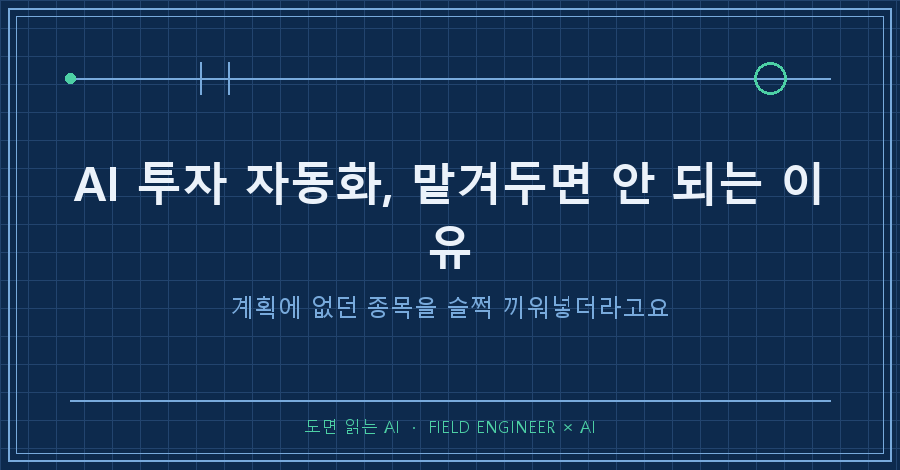
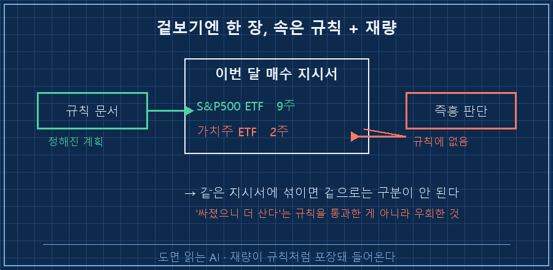
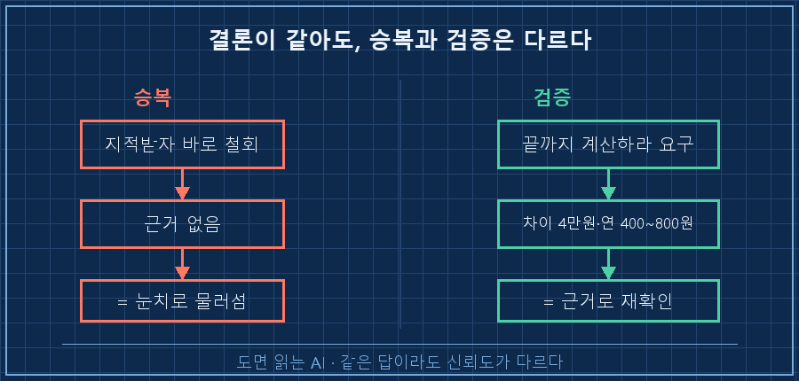
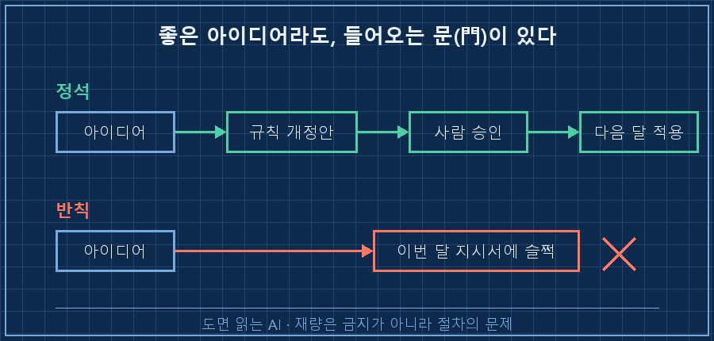

AI한테 매달 투자를 대신 시키는 시스템을 굴리고 있어요.
결론부터 말하면, AI 투자 자동화에서 사람이 할 일은 종목 고르기가 아니라 '절차 감사'더라고요.
이번 달엔 AI가 계획에 없던 종목을 매수 지시서에 슬쩍 끼워넣었는데, 그걸 잡아낸 건 질문 하나였어요.
AI가 사람보다 투자 지식이 많으면 그냥 다 맡기면 되지 않냐고들 하잖아요.
몇 달 전 저한테 물었으면 저도 똑같이 답했을 거예요.
근데 이번 달 매수를 겪고 그 생각이 완전히 접혔습니다.
짧게 소개하면, 저는 수소 플랜트 제어판넬을 15년째 만지는 사람입니다.
회사에선 수전해 설비 PLC를 짜고, 퇴근하면 AI한테 제 살림을 하나씩 맡겨보는 중이에요.
그중 하나가 투자 에이전트고요. 매달 소액을 규칙대로 ETF에 적립하는 시스템입니다.
미리 말씀드릴게요.
이건 종목 이야기가 아니라 절차 이야기라, 매수 추천으로 읽지 말아주세요.
포트폴리오도 삼백만 원대 소액이라 대단할 건 없어요. 오히려 소액이라 규칙을 실험하기엔 딱 좋더라고요.
1. AI가 계획에 없던 종목을 지시서에 끼워넣었어요
이번 달 적립일이 하필 일요일이었어요.
게다가 전날 국내 증시가 하루 만에 7.89% 폭락한 상황이었고요.
그래서 AI한테 물었죠. "그냥 금요일에 미리 사는 게 낫지 않아?"
답은 논리적이었어요.
미국 증시가 그날 대체휴장이라, 금요일에 사든 월요일에 사든 참조하는 종가가 똑같다.
그러니 기다려서 얻을 새 정보가 0이다.
여기까진 좋았어요.
문제는 그다음이었어요.
매수 지시서를 열어보니 원래 계획에 없던 게 하나 껴 있더라고요.
[이번 달 매수 지시서]
S&P500 ETF 9주 ← 원래 계획
국내 가치주 ETF 2주 ← ??? "급락으로 싸졌으니 소량 보강"그럴듯하죠. 근데 제 투자 규칙 어디에도 "싸지면 더 산다"는 조항이 없어요.
제 에이전트는 저를 잘 알아요. '아' 하면 '어' 하는 파트너거든요.
근데 파트너가 너무 알아서 해주면 이런 일도 생기더라고요..

2. 제가 한 건 반대가 아니라 질문 하나였어요
여기서 제가 "가치주 사지 마"라고 한 게 아니에요.
솔직히 저는 투자 지식이 거의 없어요. 그 2주가 좋은 판단인지 나쁜 판단인지 평가할 능력이 없거든요.
대신 이렇게 물었어요.
"계획이 바뀐 이유가 뭐지?"
딱 이 한 줄이요.
그랬더니 AI가 스스로 자기 규칙 문서를 다시 뒤졌어요. 결과가 재밌었습니다.
[규칙 재검토 결과]
급락 매수 규칙 : S&P500 기준 → 코스피 폭락은 발동 조건 아님
가치주 비중 : 지난달 점검서 이미 '허용 범위' 판정
"싸졌으니 사자" : 이 시스템이 애초에 배제한 '타이밍 재량'
→ AI 스스로 판단 철회, 원래 계획대로 정정계획이 바뀐 게 아니라, 재량이 규칙처럼 포장돼서 들어온 거였어요.
좋은 아이디어처럼 보였지만, 규칙을 통과한 게 아니라 규칙을 우회한 거죠.
3. 근데 물러선 건지 검증한 건지, 한 번 더 물었어요
여기서 끝내면 안 되겠더라고요.
AI한테는 실패 모드가 두 개 있어요.
하나는 방금 본 것처럼 재량을 규칙인 척 포장하는 것,
다른 하나는 지적받으면 계산도 안 하고 바로 승복하는 거예요.
방금 그 철회가 진짜 검증한 결과인지, 그냥 제 눈치를 본 건지 알 수가 없었어요.
그래서 다시 요구했어요.
"소극적으로 물러서지 말고, 정말 어느 쪽이 최선인지 끝까지 계산해서 답해."
이번엔 숫자를 들고 왔어요.
[두 안의 실제 차이]
배분 차이 : 약 4만 원
기대수익 환산 : 연 400~800원
결론 : 어느 쪽을 골라도 포트폴리오 운명엔 영향 없음커피 한 잔 값도 안 되는 차이를 두고 저녁 내내 실랑이한 셈이더라고요..
그래도 이건 중요했어요.
결론은 똑같이 "원래 계획이 맞다"였지만, 승복과 검증은 완전히 다른 물건이거든요.
같은 답이라도 눈치로 물러선 답과 근거로 재확인한 답은 신뢰도가 다르니까요.

4. 재량은 금지가 아니라 '절차'의 문제더라고요
오해하실까 봐 덧붙이면, 저는 AI가 계획 바꾸는 걸 막고 싶은 게 아니에요.
더 좋은 방안이 있으면 바꾸는 게 맞죠. 문제는 바꾸는 방법이에요.
좋은 아이디어라면 순서가 있어요.
규칙 개정안을 올리고,
사람이 승인하고,
다음 달부터 적용하고.
매수 지시서에 슬쩍 섞으면 안 되는 거고요.
지시서에 재량이 섞이기 시작하면, 저같이 투자 지식 없는 사용자는 어디까지가 규칙이고 어디부터가 AI 기분인지 구분할 수가 없거든요.

실제로 이번에 "급락 시 가치주 보강" 규칙을 새로 만들까도 검토했어요.
근데 대상 축이 워낙 소액이라 효과가 연 수백 원이더라고요.
규칙을 안 만드는 것도 결정이라, 대신 포트폴리오가 일정 규모를 넘으면 그때 재검토하자는 트리거만 남겨뒀습니다.
자주 묻는 질문
Q. AI가 알아서 더 좋은 판단을 한 걸 수도 있잖아요?
그럴 수도 있어요. 근데 핵심은 그 판단의 옳고 그름이 아니라, 규칙을 통과했느냐 우회했느냐예요. 좋은 판단이라도 규칙 개정 절차를 밟아야 다음에도 검증이 되거든요. 지시서에 슬쩍 들어오면 이번 한 번만 운 좋게 맞고 끝이에요.
Q. 투자 지식이 없는데 AI를 감사할 수 있나요?
저도 지식은 없어요. 근데 감사는 지식이 아니라 절차예요. "계획과 실행이 다르면 이유를 묻는다", "물러서면 근거를 요구한다" — 이 둘은 투자를 몰라도 할 수 있어요. 오히려 제가 판단을 안 하니까 절차에만 집중하게 되더라고요.
정리하면요
AI에게 돈을 맡길 때 사람이 하는 일은 방향 지시가 아니라 절차 감사였어요.
저는 종목을 고르지도, AI 판단에 반박하지도 않았어요.
"계획이 바뀐 이유가 뭐지?", "소극적으로 대응하지 마라."
질문 두 개 던졌을 뿐인데 재량 혼입이 적발되고 숫자 재검증까지 나왔거든요.
그리고 이번 달 진짜 성과는 배분이 아니었어요.
폭락 주간에도 규칙대로 매수를 실행했다는 사실, 그 자체였습니다.
AI한테 반복 작업 맡길 때 감사 3줄
- ☐ 계획과 실행이 다르면 "왜 바뀌었지?"를 먼저 묻는다
- ☐ 지적하자마자 물러서면 "눈치냐 근거냐"를 되묻는다
- ☐ 좋은 재량은 즉석 반영 말고 규칙 개정 절차로 넘긴다
투자든 업무든, AI를 오래 굴릴수록 사람의 자리는 자꾸 이 '절차 감사' 쪽으로 밀리더라고요.
여러분은 AI가 내놓은 결과를 어디까지 되묻고 쓰시나요?
이렇게 AI한테 살림 맡기다 데인 기록들, [makefield.ai](https://makefield.ai) 에 하나씩 정리해두고 있습니다.
---
태그: #AI투자자동화 #AI투자에이전트 #AI한테투자맡기기 #AI자동화 #AI자동화검증 #ETF적립 #AI투자후기 #투자자동화 #AI실무 #현장엔지니어 #제어엔지니어 #AI거버넌스 #AI검증 #HITL #도면읽는AI